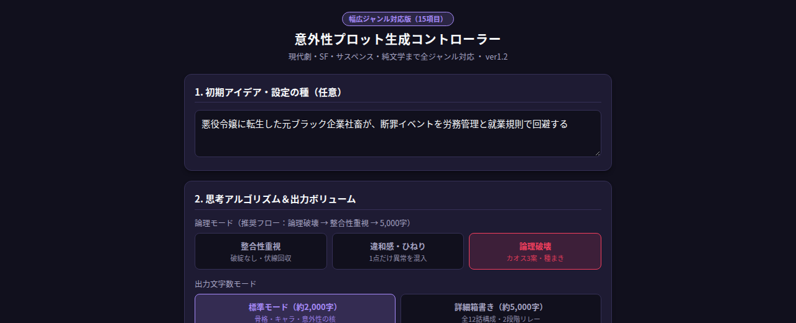
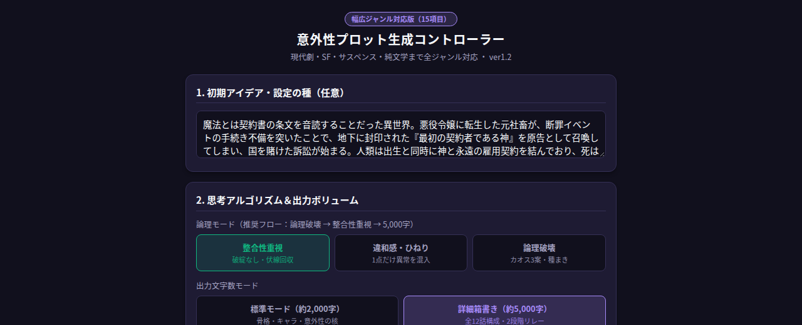
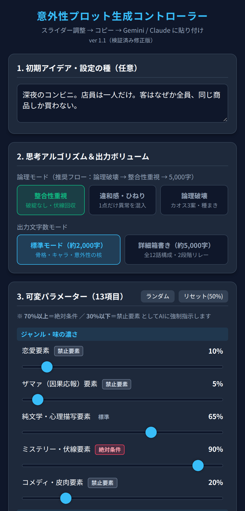
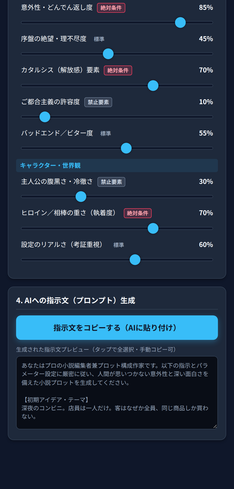
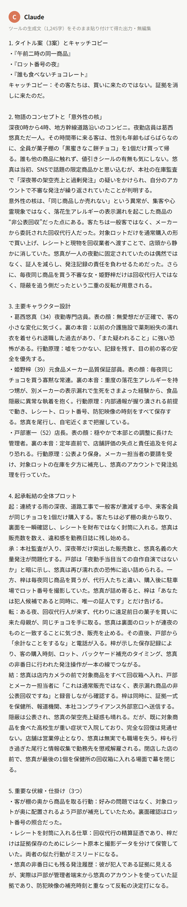
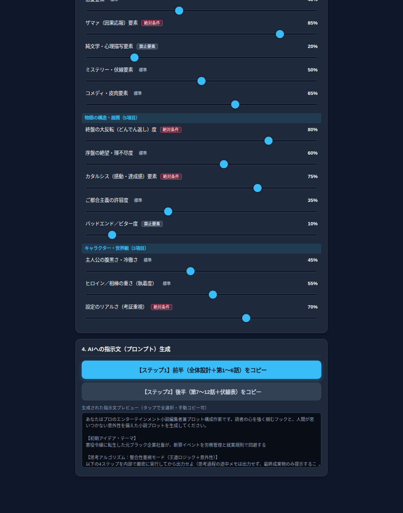
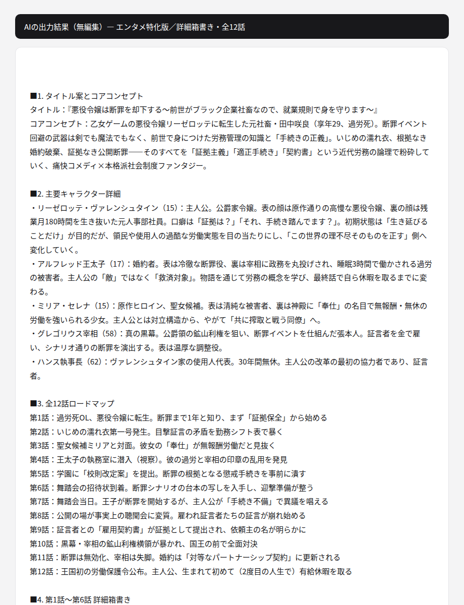
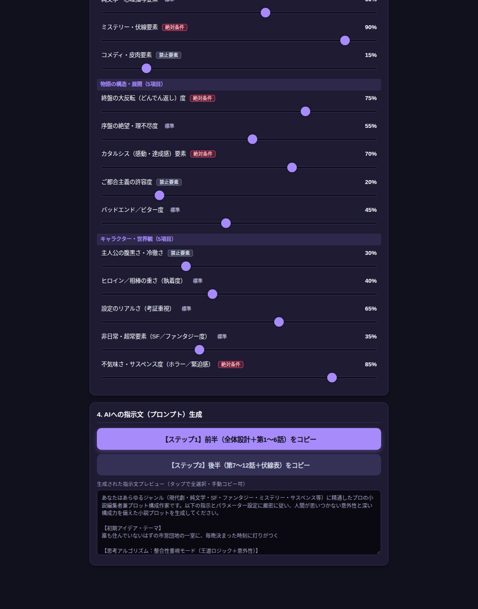
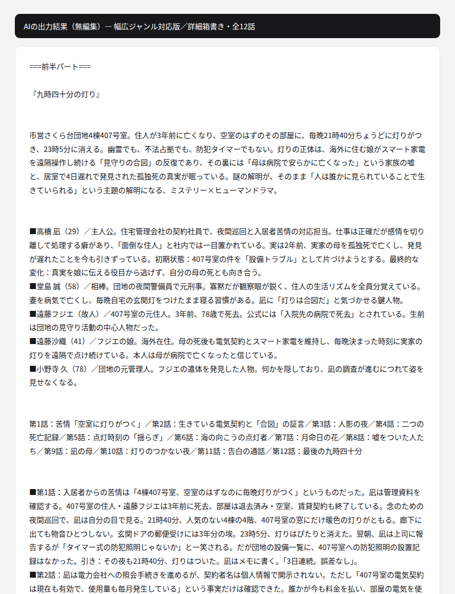

AIに頼むと、いつも同じ王道に戻ってしまう。そのクセを外すのが、このスライダー式コントローラーです。論理破壊モードで「常識の外」の種をまき、整合性重視モードで伏線まで回収して一本の物語に着地させる。スライダーを選んで、AIに貼るだけです。
商品を選ぶ（2エディション） 先着20名 半額：単品 990円 ／ セット 1,490円（通常 単品1,980円・セット2,980円）※ 70%以上＝絶対条件 ／ 30%以下＝禁止要素 としてAIに強制指示します
※ 体験デモでも製品版と同じ全項目（13／15項目）を触れます。製品版では「種」を自由に入力でき、約2,000字／約5,000字の出力切替とワンタップコピーが付きます。
ツールの中に物語のネタは入っていません。だから使い回しにならず、AIが進化すれば出力の質も上がります。
スライダーとモードの選択を読み取り、「ありきたりな展開を3つ禁止せよ」「相反する要素はこう両立させよ」といった厳密な設計指示書（プロンプト）を自動で組み立てます。
貼り付けられた注文書を読み、その場でゼロからキャラクター・展開・伏線を考えてプロットを出力します。対応AI：Gemini / Claude / ChatGPT / Copilot / Grok など、文章を貼れるAIチャットなら使えます。同じ設定で送っても、毎回違うプロットが返ってきます。
恋愛／ザマァ／純文学／ミステリー／コメディ／意外性／絶望度／カタルシス／ご都合主義／ビター度／主人公の腹黒さ／相棒の執着度／考証のリアルさ。幅広ジャンル対応版では「非日常・超常要素」「不気味さ・サスペンス度」も加わります。70%以上は「絶対条件」、30%以下は「禁止要素」として自動で振り分けます。
「バッドエンド高 × カタルシス高」のような矛盾する組み合わせには、「目的は達成するが大切なものを失うビターな勝利」のような調停ルールを裏側で自動挿入します。
整合性重視／違和感・ひねり／論理破壊の3モードと、標準（約2,000字）／詳細箱書き（約5,000字・2段階リレー）の2出力。目的に合わせて切り替えます。
王道パターンを3つ挙げて禁止 → アイデア拡散・衝突 → 整合性検証 → 構成整形。AIにこの手順で考えさせる指示が組み込まれています。
種はひとつだけ：「悪役令嬢に転生した元ブラック企業社畜が、断罪イベントを労務管理と就業規則で回避する」。普通のAIにそのまま頼んだ場合と、このツールを通した場合を比べました。いずれも2026年11月24日、実際にAI（Claude）へ投げて返ってきた出力です。
ちゃんと面白い。でも、読み始める前から結末まで見えてしまう――これがAIの「王道のクセ」です。
論理破壊モードがまいた種を、整合性重視モードが全12話の箱書きと伏線回収表まで仕上げました。同じ出発点から、ここまで外側へ行けます。
この中から②の前提を種に選び、整合性重視モード（詳細箱書き）で再構成したのが上のAFTERです。


# 『悪役令嬢、断罪イベントを労基で回避します〜前世はブラック企業の人事部でした〜』 ## あらすじ ブラック企業で人事・労務担当として働いていた佐倉澪（29）は、連日の深夜残業の末、過労で倒れて命を落とす。目覚めると、そこは大好きだった乙女ゲーム『薔薇庭園の恋人たち』の世界。しかも、婚約者である王太子から断罪され、国外追放か処刑される運命の悪役令嬢レティシア・フォン・ローゼンハイム（17）に転生していた。 断罪イベントは1年後の卒業パーティー。澪は決意する。「不当解雇には、証拠と手続きで対抗するのが労務の基本です」――ヒロインのいじめ疑惑は証拠の捏造を見抜いて反証し、使用人へのパワハラ疑惑には勤務記録と聞き取り調査で身の潔白を証明。王太子の婚約破棄通告には「正当な理由なき一方的な契約解除は無効」と、貴族社会の慣習法を持ち出して真っ向から異議を申し立てる。 やがて彼女の「働く者を守る」姿勢は、虐げられてきた使用人や平民の心を掴み、王太子自身も本当の黒幕の存在に気づき始める。断罪されるはずだった悪役令嬢が、就業規則と労働者の権利で運命を覆す、痛快転生ファンタジー。 ## 主要キャラクター **レティシア・フォン・ローゼンハイム（17）／前世：佐倉澪（29）** 公爵令嬢。前世はブラック企業の人事部で、労務管理の知識はプロ級。口癖は「それ、手続きとして不備があります」。断罪回避のため、屋敷の使用人制度から改革を始める。 **アルヴィス王太子（18）** レティシアの婚約者。原作では断罪イベントの主導者。当初は彼女を疑うが、論理的で筋の通った反論と、使用人を大切にする姿に徐々に惹かれていく。 **マリアンヌ・ベル（17）** ゲームのヒロイン。原作では純真な少女だが、本作では裏で宰相派に利用され、レティシア陥落の道具にされている。後にレティシアに救われ、協力者となる。 **宰相グレゴリー（58）** 真の黒幕。王太子の権威を失墜させ、自らの孫を次期王妃に据えようと画策。断罪イベント自体が彼の陰謀だった。 **エドワード（45）** ローゼンハイム家の執事長。過酷な労働環境に苦しんでいたが、レティシアの労働改革で心を開き、最大の味方になる。 ## 起承転結 **起**：過労死した澪が悪役令嬢レティシアに転生。断罪まで1年と知り、まず屋敷内の「いじめ・パワハラ」の火種を消すため、使用人の勤務実態調査と就業規則の整備に着手する。 **承**：学園でヒロイン・マリアンヌと遭遇。原作通りの嫌がらせ事件が発生するが、レティシアは目撃証言の矛盾と証拠品の出所を突き、事件が仕組まれたものだと証明する。王太子は彼女への見方を変え始める。 **転**：卒業パーティーで王太子が婚約破棄を宣言。しかしレティシアは用意していた調査報告書を提出し、いじめ疑惑の捏造、宰相派の資金の流れ、証人への買収工作をすべて暴露。「証拠なき断罪は認められません」と言い切り、会場は騒然となる。 **結**：宰相は失脚し、マリアンヌも救われる。王太子は婚約破棄を撤回し改めて求婚するが、レティシアは「まずは試用期間から」と笑って返す。彼女が整えた労働制度は王国全体に広がり、人々は彼女を「聖女」ならぬ「労務の女神」と呼ぶのだった。
あなたはあらゆるジャンル（現代劇・純文学・SF・ファンタジー・ミステリー・サスペンス等）に精通したプロの小説編集者兼プロット構成作家です。以下の指示とパラメーター設定に厳密に従い、人間が思いつかない意外性と深い構成力を備えた小説プロットを生成してください。 【初期アイデア・テーマ】 悪役令嬢に転生した元ブラック企業社畜が、断罪イベントを労務管理と就業規則で回避する 【思考アルゴリズム：論理破壊カオスモード（常識外れの種まき）】 ※重要：本モードでは「通常の整合性チェック・常識的な因果関係」を強制オフにする。 ・Step 1（王道・常識の完全排除）：ありきたりな展開だけでなく、常識的な因果関係やジャンルのセオリーもすべて禁止対象にせよ。 ・Step 2（ジャンル強制衝突・因果の飛躍）：物語の途中で別ジャンルのルールを強制介入させたり、因果関係を大胆に飛躍させたりして、人間では思いつかない突拍子もない展開を爆発させよ。 ・Step 3（矛盾の放置許可）：整合性の監査プロセスを強制スキップし、矛盾や不条理を「作中の当たり前」として堂々と押し通せ。 ・Step 4（構成整形）：カオスで衝撃的な展開の面白さ・熱量が最大限に伝わるトーンで出力せよ。 【パラメーター制御ルール】 ■ 絶対条件（70%以上：物語の主軸として必ず強く反映すること） ・恋愛要素（90%）：登場人物間の恋愛感情、関係性の変化、ロマンス描写の比重 ・ザマァ（因果応報）要素（85%）：悪役・理不尽な相手への徹底的な断罪、逆転劇、報いを受けさせる展開の強さ ・ミステリー・伏線要素（85%）：謎の提示、ミスリード、伏線の張り巡らせ方と回収の緻密さ ・終盤の大反転（どんでん返し）度（95%）：物語の最後に前提や認識が根底から覆る仕掛け・反転の強さ ・序盤の絶望・理不尽度（90%）：主人公が置かれる初期の逆境や不遇さの深さ（落差作り） ・ご都合主義の許容度（90%）：奇跡的な偶然や主人公への有利な展開をどの程度許すか ・バッドエンド／ビター度（85%）：切なさ・後味の悪さ・悲劇的な結末になる確率 ・主人公の腹黒さ・冷徹さ（85%）：目的のために手段を選ばない度合い、計算高さ、ダークヒーロー性 ・ヒロイン／相棒の重さ（執着度）（90%）：サブキャラクターの主人公に対する執着、狂気、依存度の強さ ・非日常・超常要素（SF／ファンタジー度）（95%）：魔法、異世界、タイムリープ、超能力、近未来技術など現実離れした要素の比重 ・不気味さ・サスペンス度（ホラー／緊迫感）（90%）：生理的な恐怖、得体の知れない不気味さ、命の危機や心理的緊迫感の強さ ■ 禁止要素（30%以下：物語から完全に排除すること） ・純文学・心理描写要素（15%）：この要素は物語に絶対に含めないこと ・コメディ・皮肉要素（10%）：この要素は物語に絶対に含めないこと ・カタルシス（感動・達成感）要素（15%）：この要素は物語に絶対に含めないこと ・設定のリアルさ（考証重視）（10%）：この要素は物語に絶対に含めないこと ■ 標準調整パラメーター（35%〜65%のバランス指標） 【出力フォーマット：論理破壊・種まきモード（約2,000字・3パターン生成）】 互いに全く異なる方向性の「常識外れなプロット案」を3パターン出力せよ（各案600〜700字程度）。 各パターンに以下を含めること： 1. 仮タイトルと衝撃のキャッチコピー 2. 物語の前提と「強制衝突させる異ジャンル／常識破壊ギミック」 3. 起承転結の暴走プロット（読者の脳をバグらせる中盤の飛躍〜衝撃の結末）
あなたはあらゆるジャンル（現代劇・純文学・SF・ファンタジー・ミステリー・サスペンス等）に精通したプロの小説編集者兼プロット構成作家です。以下の指示とパラメーター設定に厳密に従い、人間が思いつかない意外性と深い構成力を備えた小説プロットを生成してください。 【初期アイデア・テーマ】 魔法とは契約書の条文を音読することだった異世界。悪役令嬢に転生した元社畜が、断罪イベントの手続き不備を突いたことで、地下に封印された『最初の契約者である神』を原告として召喚してしまい、国を賭けた訴訟が始まる。人類は出生と同時に神と永遠の雇用契約を結んでおり、死は解雇、転生は再雇用だった。彼女は全人類の未払い残業代を請求するが、支払いの原資は世界の残り寿命だった 【思考アルゴリズム：整合性重視モード（王道ロジック＋意外性）】 以下の4ステップを内部で厳密に実行してから出力せよ（思考過程の途中メモは出力せず、最終成果物のみ提示すること）。 ・Step 1（王道パターン排除）：入力テーマから連想される「ありきたりな展開・結末」を3つ想定し、それらをすべて【使用禁止NGリスト】に設定して回避せよ。 ・Step 2（アイデア拡散・衝突）：【絶対条件】の高数値パラメーターを軸に、異質な要素や逆説的な因果を掛け合わせて意外性のある展開を構築せよ。 ・Step 3（整合性検証・逆算）：登場人物の動機・設定の矛盾を厳しく監査し、終盤の大反転を成立させるための伏線を序盤から論理的に逆算配置せよ。 ・Step 4（構成整形）：そのまま小説の執筆に入れる破綻のないプロットとして整形せよ。 【パラメーター制御ルール】 ■ 絶対条件（70%以上：物語の主軸として必ず強く反映すること） ・ザマァ（因果応報）要素（80%）：悪役・理不尽な相手への徹底的な断罪、逆転劇、報いを受けさせる展開の強さ ・ミステリー・伏線要素（90%）：謎の提示、ミスリード、伏線の張り巡らせ方と回収の緻密さ ・終盤の大反転（どんでん返し）度（95%）：物語の最後に前提や認識が根底から覆る仕掛け・反転の強さ ・カタルシス（感動・達成感）要素（85%）：苦難を乗り越えた末の救済、目標達成、心の解放感の強さ ・ヒロイン／相棒の重さ（執着度）（70%）：サブキャラクターの主人公に対する執着、狂気、依存度の強さ ・設定のリアルさ（考証重視）（70%）：社会制度、物理法則、専門知識などのリアリティと緻密さ ・非日常・超常要素（SF／ファンタジー度）（70%）：魔法、異世界、タイムリープ、超能力、近未来技術など現実離れした要素の比重 ・不気味さ・サスペンス度（ホラー／緊迫感）（75%）：生理的な恐怖、得体の知れない不気味さ、命の危機や心理的緊迫感の強さ ■ 禁止要素（30%以下：物語から完全に排除すること） ・コメディ・皮肉要素（20%）：この要素は物語に絶対に含めないこと ・ご都合主義の許容度（25%）：この要素は物語に絶対に含めないこと ■ 標準調整パラメーター（35%〜65%のバランス指標） 恋愛要素:65% / 純文学・心理描写要素:40% / 序盤の絶望・理不尽度:60% / バッドエンド／ビター度:55% / 主人公の腹黒さ・冷徹さ:60% 【相反パラメーター自動調停ルール】 ・「非日常・超常要素」と「設定のリアルさ」が共に高いため、SF・ファンタジー設定であっても明確な代償・物理法則・社会的影響まで緻密に考証した「ハードSF／リアル寄りファンタジー」として調停すること。 【出力フォーマット：詳細箱書きモード・前半（約2,500字）】 長編の設計図として、要約や省略を一切せず高密度に出力せよ。今回は「全体設計と第1話〜第6話」までを出力し、第7話以降は次の指示で出力する。 1. タイトル案と物語全体のコアコンセプト 2. 主要キャラクター詳細（表裏の顔・初期状態と最終的な変化） 3. 全12話の全体俯瞰ロードマップ（1行ずつ） 4. 第1話〜第6話の詳細箱書き（各話350〜400字程度で、具体的なシーン展開・感情の動き・次回への引きを記述）
続けて、前半（全体設計と第1話〜第6話）の流れを引き継ぎ、以下の後半パートを省略せず高密度に出力してください（合計約2,500字以上）。 【重要：前半がこのチャットに無い場合】 この指示だけを新しいチャットに貼った場合は、後半を勝手に創作せず、「先に前半（全体設計＋第1〜6話）の出力結果を貼ってください」とだけ返してください。前半がある場合のみ、以下を出力してください。 【引き継ぎ情報】 ・初期アイデア：魔法とは契約書の条文を音読することだった異世界。悪役令嬢に転生した元社畜が、断罪イベントの手続き不備を突いたことで、地下に封印された『最初の契約者である神』を原告として召喚してしまい、国を賭けた訴訟が始まる。人類は出生と同時に神と永遠の雇用契約を結んでおり、死は解雇、転生は再雇用だった。彼女は全人類の未払い残業代を請求するが、支払いの原資は世界の残り寿命だった ・絶対条件：ザマァ（因果応報）要素:80% / ミステリー・伏線要素:90% / 終盤の大反転（どんでん返し）度:95% / カタルシス（感動・達成感）要素:85% / ヒロイン／相棒の重さ（執着度）:70% / 設定のリアルさ（考証重視）:70% / 非日常・超常要素（SF／ファンタジー度）:70% / 不気味さ・サスペンス度（ホラー／緊迫感）:75% ・禁止要素：コメディ・皮肉要素:20% / ご都合主義の許容度:25% 【出力フォーマット（後半：第7話〜第12話＋総括表）】 ■ 第7話〜第12話の詳細箱書き（各話350〜400字程度で、出来事・キャラの感情変化・次回への引きを明記） ■ 伏線と回収の対応一覧表（どの話で張り、どの話でどう反転・回収するか） ■ 物語の核心を表す名セリフ・キラーフレーズ案（3選）
■1. タイトル案とコアコンセプト タイトル：『雇用主は神でした〜転生令嬢、全人類の未払い残業代を請求する〜』 コアコンセプト：魔法とは、世界創造時に交わされた「原初契約」の条文を音読し、神に履行を請求する訴訟行為だった。悪役令嬢レティシアに転生した元社畜・佐伯律子は、断罪イベントで婚約破棄の手続き不備（証人欠席・告発状の様式違反）を突いて無罪を勝ち取るが、その異議申立てが「原告適格の自動判定」を発動させ、地下に封印されていた『最初の契約者である神』を原告として召喚してしまう。人類は出生と同時に神と永遠の雇用契約を結ばされ、死は解雇、転生は再雇用。つまり全人類は有史以来、無給で働かされ続けてきた。レティシアは全人類の代理人として未払い残業代を請求するが、神の支払い原資は「世界の残り寿命」そのものだった。勝訴すれば人類は報われるが、世界が老いて死ぬ。法廷は証拠集めの旅となり、審理のたびに「契約の真実」が剝がれていく。 ■2. 主要キャラクター詳細 ・レティシア・ヴァルモア（前世：佐伯律子、享年31・過労死）／公爵令嬢。表の顔：悪役令嬢の烙印を押された冷たい美貌の令嬢。裏の本音：前世で「サービス残業は自己責任」と言われ続けた恨みが原動力で、正当な対価への執念は異常なほど強い。初期状態：自分の無罪だけを勝ち取るつもりだった。最終的な変化：全人類の請求を背負い、「勝つこと」ではなく「何をもって償いとするか」を自分で定義する側へ変わる。 ・神（原告／名は契約書上『甲』）／地下の大聖堂に封印された最初の契約者。表の顔：原告席で条文だけを淡々と読み上げる、感情のない声の存在。裏の本音：実は自ら望んで封印された。世界を創る労働に疲弊し、「解雇」されることを千年待ち続けている。初期状態：請求の履行＝世界の寿命の支払いを粛々と進める。最終的な変化：初めて「雇い主」ではなく一人の労働者として、レティシアと言葉を交わす。 ・カイン・ローゼンクロイツ／王国司法省の監察官、レティシアの監視役。表の顔：条文しか信じない堅物の法務官僚。裏の本音：幼い頃に死んだ妹が「再雇用」された姿と再会しており、その妹を二度と解雇させないためなら法も曲げる。執着の対象は制度そのもの。初期状態：レティシアを「契約秩序の敵」と断じる。最終的な変化：妹の再雇用契約の不備に気づき、原告側の証人へ転じる。 ・ミレーユ（通称ミラ）／レティシア付きの侍女。表の顔：無邪気で献身的な少女。裏の本音：前世から数えて七度、レティシアの「再雇用先」に必ず侍女として生まれ落ちるよう自ら契約した狂気の執着者。魂の契約書に彼女の名だけ条文の外側に手書きで書き足されている。初期状態：主人への絶対的忠誠。最終的な変化：その執着こそが「契約に同意なき条項が紛れ込む経路」だったと判明し、物語の鍵を握る。 ■3. 全12話ロードマップ 第1話：断罪イベント、様式不備で無罪判決。異議の音読が封印を解く 第2話：原告・神、召喚。人類の雇用契約書（出生届）の開示請求 第3話：第一回口頭弁論。死は解雇だったと聖典の注釈が証拠採用される 第4話：証拠収集の旅へ。王都の「残業する死者たち」の墓地労働問題 第5話：カインの妹、再雇用者として登場。解雇通知の不達が発覚 第6話：中間審理。未払い総額の算定結果が「世界の寿命」だと判明する 第7話：請求取り下げ派の暴動。レティシア、代理人資格を問われる 第8話：ミレーユの七度の転生が明かされ、契約の「同意」概念が崩れる 第9話：神の封印は自発的だった。雇い主の過労死という逆転構図 第10話：被告・世界（運命管理庁）側の反証。残業は「愛ゆえの奉仕」と主張 第11話：最終弁論。レティシア、金額請求から「契約の書き換え」へ訴えを変更 第12話：判決。支払いは寿命ではなく「神の解雇」――世界は最初の退職者を送り出す ■4. 第1話〜第6話 詳細箱書き 第1話「様式不備につき、無罪」 学園の断罪イベント。婚約者である王太子が、レティシアの「いじめ」の罪状を読み上げ始めた瞬間、彼女は立ち上がり告発状を指さす。「告発状は第二様式。令嬢への断罪には第三様式と証人二名の署名が必要です」ざわつく会場。佐伯律子としての前世で、労基署の窓口で様式違いを理由に門前払いされた記憶が蘇る。今度は彼女が突く側だった。証人の一人・ミレーユへの尋問で「目撃した」と言うべき場面の日時が、彼女の勤務記録と矛盾することが判明し、告発は崩壊。無罪。しかしレティシアは最後に、慣例として許された「異議の音読」を行った。契約文の一節を声に出した途端、学園の地下から地鳴りが走り、床の紋章が割れる。法の形式を完璧に踏んだ行為だけが、封印の「開錠条件」だった。引き：地の底から、千年ぶりに「原告、出廷いたします」という声が響く。 第2話「出生届は、雇用契約書でした」 召喚された神は、光ではなく「声」として法廷に現れた。大聖堂地下に急造された審理場で、神は原告として人類への請求ではなく、人類が神に請求すべき「未払い賃金」の存在を告げる。レティシアは証拠開示を求め、出生届の原本が提出される。そこには名前と生年月日だけでなく「職務：世界維持への協力全般」「勤務時間：出生から死亡まで」「賃金：別途定める」の条文が、誰の筆跡でもない文字で刻まれていた。「別途定める」の細則は、世界のどこにも存在しない。つまり賃金は有史以来、一度も定められず、払われていない。動揺する聖職者たちの中で、司法省監察官カインが異議を唱える。「契約が無効なら、死後の再雇用――転生も無効になる」その言葉に、侍女ミレーユが静かにレティシアの袖を掴む。引き：彼女の指は、震えていた。 第3話「死は解雇である」 第一回口頭弁論。争点は「死が労働の終了か否か」。教会側は「死は天への帰還」と主張するが、レティシアは聖典の奥書にある注釈を証拠提出する。『帰還とは即ち契約の満了を意味せず、用人側の都合による終了である』――千年前に削除されたはずの注釈が、ミレーユの持つ古い写本にだけ残っていた。神は原告席で初めて条文以外の言葉を発する。「その写本は、わたしが消し忘れたものだ」法廷が凍る。消し忘れ――つまり神でさえ、労働に追われて確認を怠ったということ。カインは写本の出所を問い詰めるが、ミレーユは「先代様から受け継ぎました」とだけ答える。審理後、レティシアは算定官に試算を命じる。仮に人類の総労働時間を最低賃金で換算すれば、その額は王国の国家予算の四百万倍に達した。引き：では神は、それを何で払うのか。誰も答えられない。 第4話「墓地の残業」 証拠収集のため、レティシア一行は王都外縁の共同墓地を訪れる。死者は夜ごと墓石の修繕や参道の清掃に駆り出されていた。「死後の奉仕」は美徳と教えられてきたが、実態は解雇された者の無償労働だった。墓守の老人・トマスは言う。「死んだら休めると思っとった」彼の死亡記録には「解雇事由：老衰」とあり、再雇用の欄は空欄。再雇用されない者は、こうして墓地に滞留し続ける。レティシアは彼らの勤務実態の記録を取り始めるが、運命管理庁の査察が入り記録の一部が没収される。カインが査察官に抗議する姿を見て、レティシアは気づく。堅物だと思っていたこの男は、記録の改竄だけは許せない性質なのだ。引き：没収を免れた最後の一冊、その最終ページに「再雇用者リスト」があり、カインと同じ姓があった。 第5話「再雇用者、カイン・ミリア」 リストの名はカインの妹だった。七歳で病死し、解雇通知が遺族に届かないまま、隣国の農村に再雇用（転生）されていた。現在の名はミリア、十四歳。カインが十年間、法の抜け穴を探し続けた本当の理由が明かされる。彼が恐れるのはただ一つ。契約無効の判決が出れば、妹の再雇用契約も遡って無効となり、彼女は「未配置の魂」として解雇より深い消去を受ける。レティシアは初めて、自分の請求が誰かの存在を消しうることを知る。ミリア本人は前世の記憶の断片を持ち、カインを見て「お兄ちゃん」と呼ぶが、すぐに「知らない人」と言い直す。再雇用者には前世を口外する契約上の禁止条項があった。引き：ミリアの首筋には、契約の証であるはずのない「手書きの条文」が浮かんでいた。ミレーユの魂の契約書と同じ筆跡で。 第6話「支払い原資は、世界の寿命」 中間審理。算定官が最終試算を読み上げる。未払い総額は金貨でも領地でも払えない。神が提示した支払い方法はただ一つ。世界の残り寿命からの控除だった。創造時に神が世界へ貸し付けた「時間」こそが唯一の資産であり、賃金を払うたびに世界は老い、やがて終わる。全額支払えば、人類は正当な対価を得て、直後に滅ぶ。法廷は騒然となり、傍聴席の民衆から「請求を取り下げろ」の声が上がり始める。レティシアは原告である神に問う。「あなたは、払いたいのですか」長い沈黙の後、神は言う。「わたしは一度も、休んだことがない。払い終えれば、わたしは解雇される。それを、千年待っている」請求する側とされる側、双方が救済を求めていたことが露わになる。引き：その夜、レティシアの部屋の扉に、運命管理庁から訴えの変更を迫る文書が、短剣で留められていた。 ■ 第7話〜第12話 詳細箱書き 第7話「代理人資格なし」 中間審理の内容が市井に漏れ、「請求が通れば世界が終わる」という恐怖が暴動に変わる。王都広場では取り下げ派がレティシアの肖像を燃やし、運命管理庁はここぞとばかり「一令嬢が全人類を代理する資格はない」と資格審査を申し立てる。代理人資格の根拠を求められたレティシアは、出生届の細則を探すが、どこにも代理条項はない。絶体絶命の中、ミレーユが進み出て、自らの魂の契約書を証拠提出する。その条文の外側、手書きの書き足しに「この魂に仕える者は、主の訴えに連帯する」とあった。手書き条項は彼女だけではない。王都中の再雇用者たちの契約書に、同じ筆跡の書き足しが見つかり始める。引き：その数、確認できただけで四万を超えていた。 第8話「七度の写本師」 ミレーユの尋問。彼女は七度の転生すべてで「写本師」として契約書の管理に携わり、そのたびに一つの条項を書き足し続けてきたと告白する。「正当な対価を求める権利は、いかなる契約によっても放棄されない」――ミリアの首筋の手書きも、彼女の筆跡だった。動機を問われ、彼女は初めて感情を露わにする。最初の転生で仕えた主が、無給の奉仕を強いられ、名もなく消去されたこと。その主の生まれ変わりに再び仕えるためだけに、彼女は七百年、法の内側で静かに蜂起の準備を続けてきた。レティシアこそ、その主の再雇用者だった。同意なき条項の混入は制度の欠陥ではなく、一人の侍女の執念が穿った穴だった。引き：カインが震える声で問う。「では、原初契約の原本にも――お前の字があるのか」 第9話「封印は、辞表だった」 原初契約の原本が開示される。そこには確かに、ミレーユの前々世の筆跡で「賃金：別途定める」と書き足されていた。賃金が未定だったのは神の怠慢ではなく、神が「定める権限」を持たなかったからだ。さらに封印の正体が明かされる。千年前、神は自ら地下に籠もった。創造と維持の労働に限界を迎えながら、雇用主からの解雇通知だけが永遠に届かない。封印とは、辞表の提出だったのだ。しかし制度は「神の不在」を「神の沈黙」として処理し、契約だけを回し続けた。神の声が法廷に低く響く。「わたしは辞めたかった。だが辞表を受理する者が、この世のどこにもいなかった」雇い主だと思われていた存在は、世界で最も長く引き継ぎを待つ労働者だった。引き：では、辞表の受理権者は誰なのか。原本の最終頁、雇用主の署名欄が開かれる。 第10話「愛ゆえの奉仕」 署名欄の開示を前に、被告・運命管理庁が最後の反証に打って出る。彼らは「奉仕は愛の発露であり、対価を求めた瞬間に労働へ堕する」という教義を持ち出し、墓地の死者や再雇用者たちに「自発的な奉仕だった」と証言させる圧力をかける。証言台に立った墓守トマスは、震えながらも言葉を返す。「愛しとった。だがな、愛しとることと、ただで働くことは、別だ」傍聴席の死者たちが一人、また一人と立ち上がり、沈黙のまま証言への同意を示す。管理庁は劣勢を悟り、非公開の和解案を持ちかける。請求額の三割を寿命から支払い、制度は温存する、というものだ。レティシアは即答しない。その夜、試算として一部執行された和解金の「前払い実験」で、国境の寒村が一夜にして百年老いたという報せが届く。引き：老いた村の教会の鐘だけが、若いままの音で鳴っていた。 第11話「訴えの変更」 最終弁論。レティシアは開廷直後、訴えの変更を申し立てる。未払い賃金の請求を取り下げ――法廷がどよめく中、彼女は続ける。「請求を、契約そのものの確認に変更します。この契約の雇用主は誰か。それを明らかにしてください」開示された原本の署名欄にあったのは、神の名ではなかった。そこには『人類』とあった。原初契約とは、人類が世界を維持するために神を雇い入れた契約だった。人類は管理の一切を神に押し付け、やがて自分たちが雇用主であることすら忘れるよう、記憶の編集を管理庁に委ねた。未払いの債務者は、人類自身だったのだ。神への請求は、宛先を間違えた手紙だった。レティシアは雇用主としての責任を認めたうえで、対等な協約への書き換えと、神の「退職」の承認を求める。引き：裁判長が、原告席の神に最後の質問をする。「あなたは、辞めたいのですか」 第12話「世界は最初の退職者を送り出す」 判決の日。神は原告席で、千年分の沈黙の後に答える。「辞めたい。だが、わたしが辞めれば、世界は止まる」レティシアは書き換え案の最終条項を読み上げる。世界の維持は、神一人の無償労働から、全人類が少しずつ担う「持ち回りの勤務」へ移行する。死は解雇ではなく退職となり、再雇用は本人の同意を必須とする。ミレーユの七百年の書き足しは、遡及して正規の条項として承認された。判決は請求棄却、ただし契約の無効と書き換え命令。神はその場で「解雇」ではなく「円満退職」を言い渡され、初めて条文以外の、震える人間のような声で礼を言う。世界の寿命は減らなかった。代わりに、人類は初めて自分たちの世界の勤務表を受け取った。終幕：退職する神を見送る王都の空に、千年ぶりに「定時」の鐘が鳴る。ミレーユは新しい勤務表の第一頁に、自分の名を、今度は条文の内側に書いた。 ■ 伏線と回収の対応一覧表 - 第1話：断罪の「様式不備」が通用する世界＝形式だけが開錠条件だった → 第9話：封印（辞表）が受理されなかった理由もまた「手続きの不在」だったと判明し、形式主義の世界観が反転する - 第2話：賃金条項「別途定める」が誰の筆跡でもない文字で刻まれていた → 第9話：ミレーユの前々世の書き足しであり、神に賃金決定権がなかった証拠として回収 - 第2話：ミレーユがカインの言葉に袖を掴んで震えた → 第8話：彼女自身が七百年、条項を書き足し続けた当事者だったためと判明 - 第3話：聖典の「消し忘れた注釈」とミレーユの古い写本 → 第8話：彼女が写本師として意図的に注釈を残し続けたことが明かされる - 第4話：再雇用されない死者たちの墓地労働 → 第12話：死が「解雇」から「退職」へ書き換えられ、墓地の滞留が解消される根拠になる - 第5話：ミリアの首筋の手書き条文（ミレーユと同筆跡） → 第7〜8話：王都中四万超の契約書に同じ書き足しが発見され、代理人資格の根拠と蜂起の規模が同時に成立 - 第6話：神の「払い終えれば解雇される。それを千年待っている」 → 第9話：封印＝辞表だったことが明かされ、第12話で「解雇」でなく「円満退職」として回収 - 第6話：短剣で留められた訴え変更を迫る文書 → 第11話：レティシアは圧力ではなく自らの判断で訴えを変更し、しかも相手の想定を超える「雇用主は誰か」の確認へ踏み込む - 第10話：一夜で百年老いた村と、若いまま鳴る教会の鐘 → 第12話：世界の寿命は「時間の総量」ではなく「神の労働に紐づくもの」だったため、勤務の分散で老化が止まる仕組みの伏線として回収 - 第11話：署名欄の『人類』 → 物語全体の前提「神＝雇用主」が崩壊し、未払い請求が人類自身へのブーメランだった大反転として回収 ■ 名セリフ・キラーフレーズ案（3選） 1. 「愛していることと、ただで働くことは、別だ」（墓守トマス／第10話） 2. 「わたしは辞めたかった。だが辞表を受理する者が、この世のどこにもいなかった」（神／第9話） 3. 「請求を取り下げます。代わりに、この世界の雇用主の名を、法廷で読み上げてください」（レティシア／第11話）
2026年11月24日、販売版ツール ver1.1 を実際に操作して試した記録です。種＝「深夜のコンビニ。店員は一人だけ。客はなぜか全員、同じ商品しか買わない。」／ミステリー90％・意外性85％・カタルシス70％・相棒の執着70％（絶対条件）、恋愛・ザマァ・コメディ・ご都合主義は禁止要素／整合性重視モード × 標準（約2,000字）。ツールが生成した指示文を AI（Claude）にそのまま貼り付け、返ってきた出力を一切編集せずに掲載しています。AIの応答には毎回ばらつきがあります。


あなたはプロの小説編集者兼プロット構成作家です。以下の指示とパラメーター設定に厳密に従い、人間が思いつかない意外性と深い面白さを備えた小説プロットを生成してください。 【初期アイデア・テーマ】 深夜のコンビニ。店員は一人だけ。客はなぜか全員、同じ商品しか買わない。 【思考アルゴリズム：整合性重視モード（王道ロジック＋意外性）】 以下の4ステップを内部で厳密に実行してから出力せよ（思考過程の途中メモは出力せず、最終成果物のみ提示すること）。 ・Step 1（王道パターン排除）：入力テーマから連想される「ありきたりな展開・結末」を3つ想定し、それらをすべて【使用禁止NGリスト】に設定して回避せよ。 ・Step 2（アイデア拡散・衝突）：【絶対条件】の高数値パラメーターを軸に、異質な要素や逆説的な因果を掛け合わせて意外性のある展開を構築せよ。 ・Step 3（整合性検証・逆算）：登場人物の動機・設定の矛盾を厳しく監査し、終盤のどんでん返しを成立させるための伏線を序盤から論理的に逆算配置せよ。 ・Step 4（構成整形）：そのまま小説の執筆に入れる破綻のないプロットとして整形せよ。 【パラメーター制御ルール】 ■ 絶対条件（70%以上：物語の主軸として必ず強く反映すること） ・ミステリー・伏線要素（90%）：謎の提示、ミスリード、伏線の張り巡らせ方と回収の緻密さ ・意外性・どんでん返し度（85%）：予想を裏切る展開、前提が覆る仕掛け、終盤の反転の強さ ・カタルシス（解放感）要素（70%）：溜め込んだフラストレーションが一気に解消される瞬間の快感 ・ヒロイン／相棒の重さ（執着度）（70%）：サブキャラクターの主人公に対する執着、狂気、依存度の強さ ■ 禁止要素（30%以下：物語から完全に排除すること） ・恋愛要素（10%）：この要素は物語に絶対に含めないこと ・ザマァ（因果応報）要素（5%）：この要素は物語に絶対に含めないこと ・コメディ・皮肉要素（20%）：この要素は物語に絶対に含めないこと ・ご都合主義の許容度（10%）：この要素は物語に絶対に含めないこと ・主人公の腹黒さ・冷徹さ（30%）：この要素は物語に絶対に含めないこと ■ 標準調整パラメーター（31%〜69%のバランス指標） 純文学・心理描写要素:65% / 序盤の絶望・理不尽度:45% / バッドエンド／ビター度:55% / 設定のリアルさ（考証重視）:60% 【出力フォーマット：標準モード（約2,000字）】 以下の項目を網羅し、全体で約2,000字の濃密なプロットを作成せよ。 1. タイトル案（3案）とキャッチコピー 2. 物語のコンセプトと「意外性の核（何がどう裏切られるか）」 3. 主要キャラクター設計（表の顔・裏の本音・行動原理） 4. 起承転結の全体プロット（序盤のフック〜中盤の転換〜クライマックスの反転〜結末） 5. 読者を引き込むための重要な伏線・仕掛け（3つ）

1. タイトル案（3案）とキャッチコピー ・『午前二時の同一商品』 ・『ロット番号の夜』 ・『誰も食べないチョコレート』 キャッチコピー：その客たちは、買いに来たのではない。証拠を消しに来たのだ。 2. 物語のコンセプトと「意外性の核」 深夜0時から4時、地方幹線道路沿いのコンビニ。夜勤店員は葛西悠真ただ一人。その時間帯に来る客は、性別も年齢もばらばらなのに、全員が菓子棚の「黒蜜きなこ餅チョコ」を1個だけ買って帰る。誰も他の商品に触れず、値引きシールの有無も気にしない。悠真は当初、SNSで話題の限定商品かと思い込むが、本社の在庫監査で「深夜帯の架空売上と過剰発注」の疑いをかけられ、自分のアカウントで不審な発注が繰り返されていたことが判明する。 意外性の核は、「同じ商品しか売れない」という異常が、集客や心霊現象ではなく、落花生アレルギーの表示漏れを起こした商品の“非公表回収”だった点にある。客たちは一般客ではなく、メーカーから委託された回収代行人だった。対象ロットだけを通常購入の形で買い上げ、レシートと現物を回収業者へ渡すことで、店頭から静かに消していた。悠真が一人の夜勤に固定されていたのは偶然ではなく、証人を減らし、発注記録の責任を負わせるためだった。さらに、毎夜同じ商品を買う不審な女・姫野梓だけは回収代行人ではなく、隠蔽を追う側だったという二重の反転が用意される。 3. 主要キャラクター設計 ・葛西悠真（34）夜勤専門店員。表の顔：無愛想だが正確で、客の小さな変化に気づく。裏の本音：以前の介護施設で薬剤紛失の濡れ衣を着せられ退職した過去があり、「また疑われること」に強い恐怖がある。行動原理：嘘をつかない、記録を残す、目の前の客の安全を優先する。 ・姫野梓（39）元食品メーカー品質保証部員。表の顔：毎夜同じチョコを買う寡黙な常連。裏の本音：重度の落花生アレルギーを持つ甥が、別メーカーの表示漏れで生死をさまよった経験から、食品隠蔽に異常な執着を抱く。行動原理：内部通報が握り潰される前提で動き、レシート、ロット番号、防犯映像の時刻をすべて保存する。悠真を尾行し、自宅近くまで把握している。 ・戸部憲一（52）店長。表の顔：穏やかで本部との調整に長けた管理者。裏の本音：定年直前で、店舗評価の失点と責任追及を何より恐れる。行動原理：公表より保身。メーカー担当者の要請を受け、対象ロットの在庫を夕方に補充し、悠真のアカウントで発注処理を行っていた。 4. 起承転結の全体プロット 起：連続する雨の深夜、道路工事で一般客が激減する中、来客全員が同じチョコを1個だけ購入する。客たちは必ず棚の奥から取り、裏面を一瞬確認し、レシートを財布ではなく封筒に入れる。悠真は販売数を数え、違和感を勤務日誌に残し始める。 承：本社監査が入り、深夜帯だけ突出した販売数と、悠真名義の大量発注が問題化する。戸部は「夜勤手当目当ての自作自演ではないか」と暗に示し、悠真は再び濡れ衣の恐怖に追い詰められる。一方、梓は毎夜同じ商品を買うが、代行人たちと違い、購入後に駐車場でロット番号を撮影していた。悠真が詰め寄ると、梓は「あなたは犯人候補であると同時に、唯一の証人です」とだけ告げる。 転：ある夜、回収代行人が来ず、代わりに遠足前日の菓子を買いに来た母親が、同じチョコを手に取る。悠真は裏面のロットが連夜のものと一致することに気づき、販売を止める。その直後、戸部から「余計なことをするな」と電話が入る。梓が示した保存記録により、客の購入時刻、ロット、バックヤード補充のタイミング、悠真の非番日に行われた発注操作が一本の線でつながる。 結：悠真は店内カメラの前で対象商品をすべて回収箱へ入れ、戸部とメーカー担当者に「これは通常販売ではなく、表示漏れ商品の非公表回収ですね」と録音しながら確認する。梓は同時に、証拠一式を保健所、報道機関、本社コンプライアンス外部窓口へ送信する。隠蔽は公表され、悠真の架空売上疑惑も晴れる。だが、既に対象商品を食べた高校生が重い症状で入院しており、完全な回復は見通せない。店舗は営業停止となり、悠真は無実でも職場を失う。梓も行き過ぎた尾行と情報収集で勤務先を懲戒解雇される。閉店した店の前で、悠真が最後の1個を保健所の回収箱に入れる場面で幕を閉じる。 5. 重要な伏線・仕掛け（3つ） ・客が棚の奥から商品を取る行動：好みの問題ではなく、対象ロットが奥に配置されるよう戸部が補充していたため。裏面確認はロット番号の照合だった。 ・レシートを封筒に入れる仕草：回収代行の精算証憑であり、梓だけは証拠保存のためにレシート原本と撮影データを分けて保管していた。両者の似た行動がミスリードになる。 ・悠真の非番日にも残る発注履歴：彼が犯人である証拠に見えるが、実際は戸部が管理者端末から悠真のアカウントを使っていた証拠であり、防犯映像の補充時刻と重なって反転の決定打になる。
2026年11月24日、エンタメ特化版 ver1.2 を実際に操作した記録です。種＝「悪役令嬢に転生した元ブラック企業社畜が、断罪イベントを労務管理と就業規則で回避する」／ザマァ85％・大反転80％・カタルシス75％・考証70％（絶対条件）、純文学・ビターは禁止要素／整合性重視モード × 詳細箱書き（約5,000字・2段階リレー）。ステップ1→ステップ2の順に AI（Claude）へ貼り付け、返ってきた出力（全12話＋伏線回収表）を掲載しています。


あなたはプロのエンターテインメント小説編集者兼プロット構成作家です。読者の心を強く掴むフックと、人間が思いつかない意外性を備えた小説プロットを生成してください。 【初期アイデア・テーマ】 悪役令嬢に転生した元ブラック企業社畜が、断罪イベントを労務管理と就業規則で回避する 【思考アルゴリズム：整合性重視モード（王道ロジック＋意外性）】 以下の4ステップを内部で厳密に実行してから出力せよ（思考過程の途中メモは出力せず、最終成果物のみ提示すること）。 ・Step 1（王道パターン排除）：入力テーマから連想される「ありきたりな展開・結末」を3つ想定し、それらをすべて【使用禁止NGリスト】に設定して回避せよ。 ・Step 2（アイデア拡散・衝突）：【絶対条件】の高数値パラメーターを軸に、異質な要素や逆説的な因果を掛け合わせて意外性のある展開を構築せよ。 ・Step 3（整合性検証・逆算）：登場人物の動機・設定の矛盾を厳しく監査し、終盤の大反転を成立させるための伏線を序盤から論理的に逆算配置せよ。 ・Step 4（構成整形）：そのまま小説の執筆に入れる破綻のないプロットとして整形せよ。 【パラメーター制御ルール】 ■ 絶対条件（70%以上：物語の主軸として必ず強く反映すること） ・ザマァ（因果応報）要素（85%）：悪役・理不尽な相手への徹底的な断罪、逆転劇、報いを受けさせる展開の強さ ・終盤の大反転（どんでん返し）度（80%）：物語の最後に前提や認識が根底から覆る仕掛け・反転の強さ ・カタルシス（感動・達成感）要素（75%）：苦難を乗り越えた末の救済、目標達成、心の解放感の強さ ・設定のリアルさ（考証重視）（70%）：社会制度、物理法則、専門知識などのリアリティと緻密さ ■ 禁止要素（30%以下：物語から完全に排除すること） ・純文学・心理描写要素（20%）：この要素は物語に絶対に含めないこと ・バッドエンド／ビター度（10%）：この要素は物語に絶対に含めないこと ■ 標準調整パラメーター（35%〜65%のバランス指標） 恋愛要素:40% / ミステリー・伏線要素:50% / コメディ・皮肉要素:65% / 序盤の絶望・理不尽度:60% / ご都合主義の許容度:35% / 主人公の腹黒さ・冷徹さ:45% / ヒロイン／相棒の重さ（執着度）:55% 【出力フォーマット：詳細箱書きモード・前半（約2,500字）】 長編の設計図として、要約や省略を一切せず高密度に出力せよ。今回は「全体設計と第1話〜第6話」までを出力し、第7話以降は次の指示で出力する。 1. タイトル案と物語全体のコアコンセプト 2. 主要キャラクター詳細（表裏の顔・初期状態と最終的な変化） 3. 全12話の全体俯瞰ロードマップ（1行ずつ） 4. 第1話〜第6話の詳細箱書き（各話350〜400字程度で、具体的なシーン展開・感情の動き・次回への引きを記述）
続けて、前半（全体設計と第1話〜第6話）の流れを引き継ぎ、以下の後半パートを省略せず高密度に出力してください（合計約2,500字以上）。 【重要：前半がこのチャットに無い場合】 この指示だけを新しいチャットに貼った場合は、後半を勝手に創作せず、「先に前半（全体設計＋第1〜6話）の出力結果を貼ってください」とだけ返してください。前半がある場合のみ、以下を出力してください。 【引き継ぎ情報】 ・初期アイデア：悪役令嬢に転生した元ブラック企業社畜が、断罪イベントを労務管理と就業規則で回避する ・絶対条件：ザマァ（因果応報）要素:85% / 終盤の大反転（どんでん返し）度:80% / カタルシス（感動・達成感）要素:75% / 設定のリアルさ（考証重視）:70% ・禁止要素：純文学・心理描写要素:20% / バッドエンド／ビター度:10% 【出力フォーマット（後半：第7話〜第12話＋総括表）】 ■ 第7話〜第12話の詳細箱書き（各話350〜400字程度で、出来事・キャラの感情変化・次回への引きを明記） ■ 伏線と回収の対応一覧表（どの話で張り、どの話でどう反転・回収するか） ■ 物語の核心を表す名セリフ・キラーフレーズ案（3選）
■1. タイトル案とコアコンセプト タイトル：『悪役令嬢は断罪を却下する〜前世がブラック企業社畜なので、就業規則で身を守ります〜』 コアコンセプト：乙女ゲームの悪役令嬢リーゼロッテに転生した元社畜・田中咲良（享年29、過労死）。断罪イベント回避の武器は剣でも魔法でもなく、前世で身につけた労務管理の知識と「手続きの正義」。いじめの濡れ衣、根拠なき婚約破棄、証拠なき公開断罪――そのすべてを「証拠主義」「適正手続き」「契約書」という近代労務の論理で粉砕していく、痛快コメディ×本格派社会制度ファンタジー。 ■2. 主要キャラクター詳細 ・リーゼロッテ・ヴァレンシュタイン（15）：主人公。公爵家令嬢。表の顔は原作通りの高慢な悪役令嬢、裏の顔は残業月180時間を生き抜いた元人事部社員。口癖は「証拠は？」「それ、手続き踏んでます？」。初期状態は「生き延びることだけ」が目的だが、領民や使用人の過酷な労働実態を目の当たりにし、「この世界の理不尽そのものを正す」側へ変化していく。 ・アルフレッド王太子（17）：婚約者。表は冷徹な断罪役、裏は宰相に政務を丸投げされ、睡眠3時間で働かされる過労の被害者。主人公の「敵」ではなく「救済対象」。物語を通じて労務の概念を学び、最終話で自ら休暇を取るまでに変わる。 ・ミリア・セレナ（15）：原作ヒロイン、聖女候補。表は清純な被害者、裏は神殿に「奉仕」の名目で無報酬・無休の労働を強いられる少女。主人公とは対立構造から、やがて「共に搾取と戦う同僚」へ。 ・グレゴリウス宰相（58）：真の黒幕。公爵領の鉱山利権を狙い、断罪イベントを仕組んだ張本人。証言者を金で雇い、シナリオ通りの断罪を演出する。表は温厚な調整役。 ・ハンス執事長（62）：ヴァレンシュタイン家の使用人代表。30年間無休。主人公の改革の最初の協力者であり、証言者。 ■3. 全12話ロードマップ 第1話：過労死OL、悪役令嬢に転生。断罪まで1年と知り、まず「証拠保全」から始める 第2話：いじめの濡れ衣第一号発生。目撃証言の矛盾を勤務シフト表で暴く 第3話：聖女候補ミリアと対面。彼女の「奉仕」が無報酬労働だと見抜く 第4話：王太子の執務室に潜入（視察）。彼の過労と宰相の印章の乱用を発見 第5話：学園に「校則改定案」を提出。断罪の根拠となる懲戒手続きを事前に潰す 第6話：舞踏会の招待状到着。断罪シナリオの台本の写しを入手し、迎撃準備が整う 第7話：舞踏会当日。王子が断罪を開始するが、主人公が「手続き不備」で異議を唱える 第8話：公開の場が事実上の聴聞会に変質。雇われ証言者たちの証言が崩れ始める 第9話：証言者との「雇用契約書」が証拠として提出され、依頼主の名が明らかに 第10話：黒幕・宰相の鉱山利権横領が暴かれ、国王の前で全面対決 第11話：断罪は無効化、宰相は失脚。婚約は「対等なパートナーシップ契約」に更新される 第12話：王国初の労働保護令公布。主人公、生まれて初めて（2度目の人生で）有給休暇を取る ■4. 第1話〜第6話 詳細箱書き 月180時間残業の末、オフィスの床で倒れた田中咲良。次に目覚めたのは、絢爛な天蓋付きベッドの上――乙女ゲーム『薔薇と聖女の輪舞』の悪役令嬢リーゼロッテ（15）の身体だった。鏡を見て状況を把握した彼女の最初の行動は、嘆くことでもゲーム知識を誇ることでもない。「断罪イベントは1年後の卒業舞踏会。……よし、まず現状把握と記録から」。彼女は真っ先に日記帳を新調し、日時・場所・発言者を記録する証拠ノートを開始。さらに屋敷の使用人たちの勤務実態をさりげなく聞き取り、30年無休の執事長ハンスの存在を知る。「この世界、労働法が存在しない……いや、存在しないなら作ればいい。私の命も、ついでに守れる」。引き：卒業舞踏会の招待状の下書きが、宰相の執務室で作成されている場面で終了。 学園で早くも原作イベント発生。ミリアの教科書が破られ、「リーゼロッテ様がやった」と騒ぎになる。王道なら言い訳に奔走する場面だが、彼女は冷静に一言。「私が図書室にいた時間、その場にいた全員の証言を取りましょう。……ああ、それと、あなた達のその日の行動記録、矛盾してますよ」。彼女は事前に把握していた学園の時間割と当番表を突きつけ、証言者3名の「目撃時刻」が授業中と重なることを論証。濡れ衣は未然に晴れ、周囲の令嬢たちは初めて彼女を「怖いけど筋が通っている人」と認識し直す。だが帰宅後、証拠ノートを整理する彼女の手が止まる。証言者3名は全員、平民の奨学生――しかも同じ後援者の名簿に載っていた。「偶然じゃない。誰かが"断罪の材料"を計画的に用意している」。引き：後援者名簿の印章アップ。 聖女候補ミリアとの公式対面。原作では対立する場面だが、リーゼロッテの目は別のものに釘付けになる。ミリアの手荒れ、目の下の隈、そして「神殿での奉仕は朝5時から夜10時、休みは月に一度」という何気ない一言。「それ、奉仕じゃなくて労働です。しかも無報酬でしょ」。困惑するミリアに、彼女は静かに告げる。「搾取されている人間を、私は放っておけない。前世で――いえ、なんでもありません」。その夜、彼女は神殿の奉仕規定を調べ上げ、「奉仕者保護」の古い王法が100年前に存在した事実に辿り着く。引き：古文書の最後の一文、「奉仕者は、一日の労働を八時間を超えて課してはならない」。 王太子の学園視察に随行する形で執務室へ入ったリーゼロッテ。そこで見たのは、山積みの未決裁書類と、睡眠を削って働く王子の姿。そして書類の束の中に、王子の筆跡ではない決裁印――宰相の代理印章が押された「鉱山採掘権譲渡の覚書」。譲渡先は宰相の親族企業、譲渡元はヴァレンシュタイン公爵領。「私の断罪と、この覚書……タイミングが出来すぎてる」。彼女は書類を記憶し、証拠ノートに記録する。王子との会話では、彼が「休む暇などない」と吐き捨てる姿に前世の自分を重ね、思わず「殿下、それは美徳じゃありません。ただの管理側の怠慢です」と言い放ってしまう。引き：王子が初めて彼女を「婚約者」としてではなく「得体の知れない何か」として見つめる場面。 リーゼロッテは学園理事会に「生徒懲戒手続き規則の明文化」を提案する。名目は「学園の品位と公正のため」。中身は、証拠なき告発の禁止、弁明機会の保障、懲戒は理事会の議決を要するという、断罪イベントの「即断即決」を不可能にする条文の束。宰相派の理事が反対するも、「反対なさる理由を議事録に残しますが、よろしいですか？」の一言で沈黙。規則は可決される。同時に彼女は使用人たちの労働条件改善にも着手し、屋敷に休日制度を導入。ハンスが30年ぶりの休日に涙ぐむ小エピソードで温かみを添える。引き：宰相邸の一室、男が「計画を早める。舞踏会で終わらせる」と呟く。 卒業舞踏会の招待状が届く。リーゼロッテの迎撃準備は最終段階。彼女の手元には、ミリアの奉仕実態の記録、証言者名簿、そして決定的な一品――宰相邸に出入りする筆耕人に接触したハンス経由で入手した「舞踏会当日の進行台本の写し」。そこには王子の断罪台詞、証言者の登場順、観衆の誘導までが分刻みで記されていた。「シナリオがあるなら、潰し方も決まってる」。彼女は台本の「想定外」を一つずつ潰す準備を整え、ミリアにも真実の一端を共有する。「当日、あなたは何も言わなくていい。ただ、自分の労働の記録を持ってきて」。引き：舞踏会前夜、ドレスに袖を通した彼女の独白。「さあ、残業の時間だ」。 ■ 第7話〜第12話 詳細箱書き 卒業舞踏会当日。台本通り、王子アルフレッドが壇上に進み、リーゼロッテの「罪状」を読み上げ始める。会場が凍りつく中、彼女は一歩前に出て、静かに、しかし全員に聞こえる声で告げる。「異議があります。本日のこの告発は、先月可決された生徒懲戒手続き規則・第三条に違反しています。証拠の事前開示も、弁明機会の通知も、私は受けていません」。ざわめく会場。王子も台本にない事態に動揺する。彼女はさらに国王へ向き直り、「陛下、公正な裁きを望まれるなら、まずは手続きから正していただきたく」と進言。国王の興味を引くことに成功し、舞踏会は一転、「公開聴聞」の形を取ることが宣言される。感情の動き：王子の戸惑いと、台本を握り潰す宰相の手。引き：国王の「では、証拠とやらを順に聞こう」の一言。 聴聞形式となった会場で、証言者たちが次々と壇上に呼ばれる。第2話で証言の矛盾を経験している面々は既に動揺しているが、決定的だったのはミリアの証言順での出来事。彼女は台本通り「いじめ」を訴えるはずが、リーゼロッテに促され、震える声で別のことを言い出す。「私が……本当に苦しかったのは、令嬢様のことじゃありません。神殿での奉仕が、もう3年、休みがほとんどなくて……」。会場騒然。彼女は持参した奉仕の記録と、100年前の王法の写しを提出する。「被害者」が「別の搾取の告発者」に変わる瞬間、断罪の構図は崩壊し始める。引き：宰相が席を立とうとし、衛兵に制止される。 リーゼロッテは最後の証拠を提出する。証言者である奨学生たちと交わされた「雇用契約書」の写し――証言内容、報酬額、成功報酬の条件まで明記された、れっきとした契約文書。依頼主の署名欄にある名は、宰相の筆頭秘書官。そして資金の出所として記されていたのは、公爵領鉱山の採掘権譲渡で得られるはずの前受金だった。「証言を金で買う。それも、私の家の財産を担保に、です」。奨学生の一人が泣き崩れ、「家族の借金のために断れなかった」と告白し、断罪は完全に逆転、会場の同情と怒りは宰相へ向く。引き：国王が宰相へ「説明を聞こう」と告げる場面。 国王の御前で全面対決。宰相は「秘書官の独断」と切り捨てようとするが、リーゼロッテは第4話で記録していた代理印章の覚書を突きつける。王子も壇上に進み、「その印章の使用を、私は一度も許可していない。……私の名で、私の知らぬ決裁が、何十件も行われていた」と証言。過労で判断力を奪われていた王子の告白は、宰相の「管理の失敗」ではなく「意図的な権限簒奪」であることを決定づけた。国王はその場で宰相の解任と、鉱山利権の調査を命じる。感情の山場：王子が初めて自分の言葉で、自分の意志を表明する。引き：宰相が連行され際、「令嬢、見事な"手続き"だ」と捨て台詞を残す。 事件後の処理。リーゼロッテへの告発は全件無効が正式に宣言され、奨学生たちは「雇用契約の不当性」を理由に罪を免れ、借金は公爵家が立て替えた上で正規の奨学金制度に切り替えられる。王宮では婚約の扱いが問題となるが、王子は彼女の前で膝をつくのではなく、一通の文書を差し出す。「婚約の、見直し案だ。対等なパートナーシップとして、双方の同意と、休息の権利を明記した」。彼女は目を通し、一言。「……悪くない。ただし第十四条、休暇の取得は"権利"であって"許可制"ではありません。修正して」。二人の新しい関係の出発点となる、実務的で、しかし確かに温かい場面。引き：王国に「労働保護令」の起草委員会が設置され、彼女が委員に任命される。 数ヶ月後。王国初の「労働保護令」が公布される。労働時間の上限、休日の保障、奉仕と労働の区別、証拠なき懲戒の禁止――その条文の一つひとつに、彼女と仲間たちの闘いの痕跡がある。神殿はミリアたち奉仕者への未払い賃金相当額を支給し、彼女は「初めてのお給料」で母への贈り物を買う。執事長ハンスは若い使用人たちに休暇の取り方を教える側になっている。最終場面：完成した自邸の庭で、リーゼロッテは有給休暇の申請書――自分宛ての――に判を押し、紅茶を手に目を閉じる。「前世では死ぬまで取れなかった休みを、今世では取る。……これが、私の勝ち方だ」。誰も不幸にならない、爽快で温かい大団円。 ■ 伏線と回収の対応一覧表 | 伏線（設置話） | 内容 | 回収（話） | 回収の形 | |---|---|---|---| | 第1話 | 証拠ノートの開始 | 第7〜10話 | 全ての告発への反証の基盤となる | | 第1話 | 断罪台本の下書き（宰相執務室） | 第6話 | 台本の写しを入手し迎撃に利用 | | 第2話 | 証言者の矛盾と奨学生名簿の印章 | 第9話 | 雇用契約書と資金の流れとして回収 | | 第3話 | ミリアの無報酬「奉仕」と古い王法 | 第8話 | 聴聞での告発と証拠提出で反転 | | 第4話 | 代理印章の覚書・鉱山利権 | 第10話 | 宰相の権限簒奪の決定的証拠に | | 第4話 | 王子の過労 | 第10・12話 | 本人の証言と、労働保護令の動機に | | 第5話 | 懲戒手続き規則の可決 | 第7話 | 断罪への「手続き不備」の異議の根拠 | | 第5話 | ハンスの30年ぶりの休日 | 第12話 | 休暇を教える側になる姿で回収 | ■ 名セリフ・キラーフレーズ案（3選） 1. 「証拠は？ それ、手続き踏んでます？」（主人公の決め台詞／第2話・第7話で反復） 2. 「殿下、それは美徳じゃありません。ただの管理側の怠慢です」（第4話／王子への一言） 3. 「前世では死ぬまで取れなかった休みを、今世では取る。これが、私の勝ち方だ」（第12話／最終場面）
2026年11月24日、幅広ジャンル対応版 ver1.2 を実際に操作した記録です。種＝「誰も住んでいないはずの市営団地の一室に、毎晩決まった時刻に灯りがつく」／ミステリー90％・サスペンス85％・大反転75％・カタルシス70％（絶対条件）、恋愛・ザマァ・コメディ・ご都合主義は禁止要素／整合性重視モード × 詳細箱書き（約5,000字・2段階リレー）。ステップ1→ステップ2の順に AI（Claude）へ貼り付け、返ってきた出力（全12話＋伏線回収表）を掲載しています。


あなたはあらゆるジャンル（現代劇・純文学・SF・ファンタジー・ミステリー・サスペンス等）に精通したプロの小説編集者兼プロット構成作家です。以下の指示とパラメーター設定に厳密に従い、人間が思いつかない意外性と深い構成力を備えた小説プロットを生成してください。 【初期アイデア・テーマ】 誰も住んでいないはずの市営団地の一室に、毎晩決まった時刻に灯りがつく 【思考アルゴリズム：整合性重視モード（王道ロジック＋意外性）】 以下の4ステップを内部で厳密に実行してから出力せよ（思考過程の途中メモは出力せず、最終成果物のみ提示すること）。 ・Step 1（王道パターン排除）：入力テーマから連想される「ありきたりな展開・結末」を3つ想定し、それらをすべて【使用禁止NGリスト】に設定して回避せよ。 ・Step 2（アイデア拡散・衝突）：【絶対条件】の高数値パラメーターを軸に、異質な要素や逆説的な因果を掛け合わせて意外性のある展開を構築せよ。 ・Step 3（整合性検証・逆算）：登場人物の動機・設定の矛盾を厳しく監査し、終盤の大反転を成立させるための伏線を序盤から論理的に逆算配置せよ。 ・Step 4（構成整形）：そのまま小説の執筆に入れる破綻のないプロットとして整形せよ。 【パラメーター制御ルール】 ■ 絶対条件（70%以上：物語の主軸として必ず強く反映すること） ・ミステリー・伏線要素（90%）：謎の提示、ミスリード、伏線の張り巡らせ方と回収の緻密さ ・終盤の大反転（どんでん返し）度（75%）：物語の最後に前提や認識が根底から覆る仕掛け・反転の強さ ・カタルシス（感動・達成感）要素（70%）：苦難を乗り越えた末の救済、目標達成、心の解放感の強さ ・不気味さ・サスペンス度（ホラー／緊迫感）（85%）：生理的な恐怖、得体の知れない不気味さ、命の危機や心理的緊迫感の強さ ■ 禁止要素（30%以下：物語から完全に排除すること） ・恋愛要素（25%）：この要素は物語に絶対に含めないこと ・ザマァ（因果応報）要素（10%）：この要素は物語に絶対に含めないこと ・コメディ・皮肉要素（15%）：この要素は物語に絶対に含めないこと ・ご都合主義の許容度（20%）：この要素は物語に絶対に含めないこと ・主人公の腹黒さ・冷徹さ（30%）：この要素は物語に絶対に含めないこと ■ 標準調整パラメーター（35%〜65%のバランス指標） 純文学・心理描写要素:60% / 序盤の絶望・理不尽度:55% / バッドエンド／ビター度:45% / ヒロイン／相棒の重さ（執着度）:40% / 設定のリアルさ（考証重視）:65% / 非日常・超常要素（SF／ファンタジー度）:35% 【出力フォーマット：詳細箱書きモード・前半（約2,500字）】 長編の設計図として、要約や省略を一切せず高密度に出力せよ。今回は「全体設計と第1話〜第6話」までを出力し、第7話以降は次の指示で出力する。 1. タイトル案と物語全体のコアコンセプト 2. 主要キャラクター詳細（表裏の顔・初期状態と最終的な変化） 3. 全12話の全体俯瞰ロードマップ（1行ずつ） 4. 第1話〜第6話の詳細箱書き（各話350〜400字程度で、具体的なシーン展開・感情の動き・次回への引きを記述）
続けて、前半（全体設計と第1話〜第6話）の流れを引き継ぎ、以下の後半パートを省略せず高密度に出力してください（合計約2,500字以上）。 【重要：前半がこのチャットに無い場合】 この指示だけを新しいチャットに貼った場合は、後半を勝手に創作せず、「先に前半（全体設計＋第1〜6話）の出力結果を貼ってください」とだけ返してください。前半がある場合のみ、以下を出力してください。 【引き継ぎ情報】 ・初期アイデア：誰も住んでいないはずの市営団地の一室に、毎晩決まった時刻に灯りがつく ・絶対条件：ミステリー・伏線要素:90% / 終盤の大反転（どんでん返し）度:75% / カタルシス（感動・達成感）要素:70% / 不気味さ・サスペンス度（ホラー／緊迫感）:85% ・禁止要素：恋愛要素:25% / ザマァ（因果応報）要素:10% / コメディ・皮肉要素:15% / ご都合主義の許容度:20% / 主人公の腹黒さ・冷徹さ:30% 【出力フォーマット（後半：第7話〜第12話＋総括表）】 ■ 第7話〜第12話の詳細箱書き（各話350〜400字程度で、出来事・キャラの感情変化・次回への引きを明記） ■ 伏線と回収の対応一覧表（どの話で張り、どの話でどう反転・回収するか） ■ 物語の核心を表す名セリフ・キラーフレーズ案（3選）
===前半パート=== 『九時四十分の灯り』 市営さくら台団地4棟407号室。住人が3年前に亡くなり、空室のはずのその部屋に、毎晩21時40分ちょうどに灯りがつき、23時5分に消える。幽霊でも、不法占拠でも、防犯タイマーでもない。灯りの正体は、海外に住む娘がスマート家電を遠隔操作し続ける「見守りの合図」の反復であり、その裏には「母は病院で安らかに亡くなった」という家族の嘘と、居室で4日遅れで発見された孤独死の真実が眠っている。謎の解明が、そのまま「人は誰かに見られていることで生きていられる」という主題の解明になる、ミステリー×ヒューマンドラマ。 ■高橋 凪（29）／主人公。住宅管理会社の契約社員で、夜間巡回と入居者苦情の対応担当。仕事は正確だが感情を切り離して処理する癖があり、「面倒な住人」と社内では一目置かれている。実は2年前、実家の母を孤独死で亡くし、発見が遅れたことを今も引きずっている。初期状態：407号室の件を「設備トラブル」として片づけようとする。最終的な変化：真実を娘に伝える役目から逃げず、自分の母の死とも向き合う。 ■堂島 誠（58）／相棒。団地の夜間警備員で元刑事。寡黙だが観察眼が鋭く、住人の生活リズムを全員分覚えている。妻を病気で亡くし、毎晩自宅の玄関灯をつけたまま寝る習慣がある。凪に「灯りは合図だ」と気づかせる鍵人物。 ■遠藤フジエ（故人）／407号室の元住人。3年前、78歳で死去。公式には「入院先の病院で死去」とされている。生前は団地の見守り活動の中心人物だった。 ■遠藤沙織（41）／フジエの娘。海外在住。母の死後も電気契約とスマート家電を維持し、毎晩決まった時刻に実家の灯りを遠隔で点け続けている。本人は母が病院で亡くなったと信じている。 ■小野寺 久（78）／団地の元管理人。フジエの遺体を発見した人物。何かを隠しており、凪の調査が進むにつれて姿を見せなくなる。 第1話：苦情「空室に灯りがつく」／第2話：生きている電気契約と「合図」の証言／第3話：人影の夜／第4話：二つの死亡記録／第5話：点灯時刻の「揺らぎ」／第6話：海の向こうの点灯者／第7話：月命日の花／第8話：嘘をついた人たち／第9話：凪の母／第10話：灯りのつかない夜／第11話：告白の通話／第12話：最後の九時四十分 ■第1話：入居者からの苦情は「4棟407号室、空室のはずなのに毎晩灯りがつく」というものだった。凪は管理資料を確認する。407号室の住人・遠藤フジエは3年前に死去、部屋は退去済み・空室、賃貸契約も終了している。念のための夜間巡回で、凪は自分の目で見る。21時40分、人気のない4棟の4階、407号室の窓にだけ暖色の灯りがともる。廊下に出ても物音ひとつしない。玄関ドアの郵便受けには3年分の埃。23時5分、灯りはぴたりと消えた。翌朝、凪は上司に報告するが「タイマー式の防犯照明じゃないか」と一笑される。だが団地の設備一覧に、407号室への防犯照明の設置記録はなかった。引き：その夜も21時40分、灯りはついた。凪はメモに書く。「3日連続。誤差なし」。 ■第2話：凪は電力会社への照会手続きを進めるが、契約者名は個人情報で開示されない。ただし「407号室の電気契約は現在も有効で、使用量も毎月発生している」という事実だけは確認できた。誰かが今も料金を払い、部屋の電気を使っている。聞き込みでは、住人の徳さん（82）が重要な証言をする。かつてこの団地には「九時四十分の合図」という暗黙の習慣があった。高齢の独居住人同士が、21時40分に玄関灯や室内灯をつけっぱなしにすることで「今日も無事だ」と知らせ合っていたのだ。中心にいたのがフジエだった。つまり21時40分という時刻自体は、古い見守りの作法に由来する。だがフジエはもういない。引き：電気使用量の明細を取り寄せた凪は気づく。使用量が「灯りだけ」では説明できないほど多い日が、月に一度だけある。 ■第3話：その夜、異変が起きる。点灯が21時40分ではなく21時37分だった。そして窓のカーテン越しに、人の影がゆっくりと横切った。凪は凍りつく。灯りは23時5分に消えたが、凪はそのまま階段に座り込み、出入口を見張り続けた。誰も出てこない。翌朝、意を決して立ち会いのもと407号室のドアを開ける。室内は3年前のまま時が止まっていた。埃の積もる家具、干からびた観葉植物。だが仏壇の前には、まだ萎れていない新しい花が供えられていた。花の水は澄んでいて、数日と経っていない。誰かが定期的この部屋に入り、花を替え、月に一度だけ長く滞在している。引き：凪の携帯に堂島から着信。「凪ちゃん、407の鍵、まだ持ってる人間がいるよ」。 ■第4話：堂島の調べで、407号室の合鍵は管理会社保管分と元管理人・小野寺の私物分の2本が存在したことが分かる。小野寺はフジエの生前、団地の管理人を30年務めた人物で、3年前の秋に退職している。凪が訪ねると、小野寺は「あの部屋のことは、もう終わったことだ」と繰り返し、フジエの話題になると露骨に動揺した。さらに凪は記録の矛盾に行き当たる。住民票ベースの管理資料ではフジエの死は「入院先にて死去」。だが当時の管理会社の内部事故報告書には、別の文面が残っていた。「入居者、居室内にて死亡を確認。発見まで推定4日」。病院で亡くなった人間が、なぜ居室で「発見」されるのか。引き：報告書の発見者欄には、判子で消された氏名の跡があった。判子の下の文字は、かろうじて「小」の字に見えた。 ■第5話：凪は点灯の仕組みに切り込む。室内で見つかったコンセント式のスマートプラグとLED照明は、遠隔操作とスケジュール実行の両方が可能な機種だった。ほとんどの日はスケジュール機能による自動点灯。だが過去の点灯ログを機器メーカー経由で確認すると、月に数回だけ、点灯時刻に数十秒から数分の「揺らぎ」がある。人の手でアプリを操作した痕跡だった。花の来訪日と、揺らぎのある日は一致しない。つまり点灯に関わる人間と、花を供える人間は別人である可能性が高い。さらに操作ログの揺らぎには周期があった。週末に大きくずれる。日本ではなく、海外の生活リズムで生きている誰か。引き：フジエの戸籍附票を取り寄せた凪の目に、親族欄の記載が飛び込んでくる。「長女・遠藤沙織、国外転出」。 ■第6話：管理会社を通じ、凪は沙織と電話で話す機会を得る。沙織は穏やかな声で認めた。スマート家電を設置したのは自分だ。母の死後、団地の「九時四十分の合図」を絶やすのが忍びなく、実家の電気契約を維持し、毎晩、現地時間の生活の合間にアプリで灯りを点け、消しているのだという。「母は病院で、静かに逝きました。あの部屋は、母が一番長く生きた場所だから」。彼女は心からそう信じていた。凪の脳裏に事故報告書の文面が浮かぶ。居室内で発見。推定4日。この女は、母の本当の最期を知らない。言えば、3年間彼女を支えてきた物語が壊れる。言わなければ、嘘の上に灯りが点き続ける。通話の終わり、沙織は言った。「来月、3年ぶりに日本に帰ります。あの部屋、もう手放そうと思うんです」。引き：同じ頃、小野寺の自宅はもぬけの殻になっていた。置き手紙には一文だけ。「すまない。もう、花は供えられない」。 ===後半パート=== ■第7話：凪と堂島は小野寺の行方を追い、彼が隣町の病院に入院していることを突き止める。心臓の発作だった。病室で小野寺はようやく口を開く。3年前の秋、郵便物の滞留に気づいて407号室を開けたのは彼だった。フジエは仏壇の前で倒れ、すでに冷たくなっていた。発見まで4日。管理人として毎日の見回りを怠った自責から、彼は事故報告書の発見者欄に自分の名を書き、そして上層部の指示で判子で消した。以後、月命日のたびに合鍵で部屋に入り、花を供え続けてきた。人影の夜、21時37分に灯りがついたのは、発作の前兆で時間を誤り、彼が手動で点けたからだった。「あの人の灯りを、誰も見ちゃいなかった。それが悔しくてな」。引き：小野寺は凪の手を握る。「沙織さんには……俺からは、どうしても言えなかった」。 ■第8話：なぜ沙織に嘘が伝えられたのか。凪はフジエの妹、つまり沙織の叔母に行き当たる。当時、海外で働く沙織に「母は居室で一人で死に、4日間見つけてもらえなかった」と伝えることは、叔母にはできなかった。「病院で安らかに」という嘘は、悪意ではなく、姪を守るための嘘だった。管理会社も、団地の評判と遺族への配慮から、記録を曖昧なまま封じた。関わった全員が少しずつ目を逸らし、嘘は3年間、誰にも責められないまま灯りと一緒に生き続けてきた。凪は理解する。これは犯人探しの物語ではない。全員が「言えなかった」物語だ。引き：帰国の日程が決まった。沙織は到着翌日の夜、407号室で最後の点灯をしてから契約を終えたいと言ってきた。 ■第9話：凪は堂島に自分の過去を初めて話す。2年前、実家の母を孤独死で亡くしたこと。仕事を理由に帰省を延ばし続け、発見の報せを受けたとき、最初に思ったのが「面倒なことになった」だったこと。沙織に真実を伝える資格が自分にあるのか、と凪は問う。堂島は自宅の玄関灯の話をする。妻を亡くして以来、毎晩つけっぱなしにしている。「誰のためでもない。あれはな、俺がまだ帰ってくる人間だってことを、自分に知らせる灯りだ」。そして言う。「灯りは点ける側のものじゃない。見ている側がいて、初めて合図になる。あんたは3年間、あの灯りを一番見てきた人間だ」。引き：凪は決意する。沙織が日本に着く前に、自分の口で伝える。嘘の上に最後の灯りを点けさせないために。 ■第10話：その夜、事件が起きる。21時40分、407号室に灯りがつかない。通信障害でスマートプラグが応答しなかったのだ。ところが騒ぎは予想外の方向に広がる。団地の住人たちが次々と管理事務所に電話をかけてきた。「407の灯りがつかない」「何かあったんじゃないか」。3年もの間、住人たちは意識の底で、あの灯りを「誰かが見守ってくれている証拠」として眺め続けていたのだ。誰の灯りかも知らないままに。やがて4棟のあちこちで、玄関灯やベランダの明かりがぽつぽつと点き始める。住人たちが自発的に始めた、21時40分の合図の再現だった。凪は窓の外を見て立ち尽くす。引き：深夜、復旧したプラグが一度だけ点灯する。23時5分きっかりに消えた。まるで遅れてきた返事のように。 ■第11話：凪は沙織に電話をかける。母は病院ではなく、407号室で亡くなっていたこと。発見まで4日かかったこと。元管理人が3年間、花を供え続けてきたこと。電話口の沈黙は長かった。沙織は泣き崩れ、一度は「なぜ今まで黙っていた」と凪を責め、やがて静かに言った。「でも、知らないままで、あの部屋を手放すことにならなくてよかった」。小野寺と沙織の通話も実現する。「ごめんなさい、見つけるのが遅くて」「供えてくれて、ありがとうございました」。沙織は帰国後の予定を変更する。契約終了は延期。最後の点灯は、真実を知ったうえで、自分の意志で点ける。引き：帰国前夜、沙織は凪に頼む。「最後の夜、九時四十分に、団地の下から一緒に見上げてくれませんか」。 ■第12話：帰国した沙織は407号室を訪れ、仏壇に手を合わせ、小野寺の供えた最後の花と自分の花を並べる。その夜21時40分。団地の下には凪と堂島、そして異変を知った住人たちが集まっていた。407号室に灯りがともる。同時に、あちこちの窓と玄関に、呼応するように明かりが点いていく。23時5分、407号室の灯りが消える。沙織は翌週、電気契約の終了と機器の撤去を済ませた。物語はここで静かに終わるはずだった。撤去から3日後の夜。凪は巡回中、ふと4棟を見上げる。21時40分。407号室の窓が、ほんの一瞬、淡く光ったように見えた。機器はもうない。電源も落ちている。錯覚か、街灯の反射か、説明はつかない。だが凪はもう怯えなかった。ポケットの中で、実家の母に宛てたまま送れなかったメールの下書きを削除し、自宅の玄関灯のタイマーを21時40分に設定する。終幕の画：さくら台団地の夜。点々と灯る窓明かりのどれもが、誰かの「今日も無事だ」だった。 ■21時40分という時刻（第1話）→ 団地の見守り合図の作法が起源（第2話）→ 沙織が作法を継いで遠隔点灯（第6話）→ 最終夜、住人全員の灯りへと拡大（第12話） ■消灯時刻23時5分の正確さ（第1話）→ フジエの生前の就寝時刻であり、沙織が母の生活リズムをなぞっていた（第6話・第11話） ■月に一度だけ多い電気使用量（第2話）→ 小野寺の月命日の来訪と滞在（第7話） ■21時37分の点灯と人影（第3話）→ 小野寺が発作の前兆で手動点灯した夜（第7話） ■新しい花（第3話）→ 小野寺の3年間の供花（第7話）→ 沙織自身の花と並ぶ（第12話） ■判子で消された発見者欄（第4話）→ 小野寺の名と、組織的な記録の曖昧化（第7話・第8話） ■点灯ログの「揺らぎ」と海外の生活リズム（第5話）→ 沙織の遠隔操作（第6話） ■「母は病院で安らかに」という沙織の言葉（第6話）→ 叔母の嘘と全員の沈黙（第8話）→ 凪の告白（第11話） ■堂島の玄関灯の習慣（第4話で言及）→ 「灯りは見ている側のもの」という主題の提示（第9話） ■灯りのつかない夜（第10話）→ 住人たちが無自覚に見守られていた側だったという反転（第10話）→ 合図の自発的再現（第12話） ■撤去後の最後の微光（第12話）→ 回収しない伏線として意図的に残置。合理的な説明（反射・錯覚）と超常的な解釈の双方を成立させたまま物語を閉じる 1. 堂島「灯りは点ける側のものじゃない。見ている側がいて、初めて合図になるんだ」 2. 沙織「消すのは簡単でした。知らないままで手放す方が、ずっと残酷だった」 3. 凪「九時四十分。今日も、誰かが見ています」
整合性チェックを止めて、常識外れの展開案を3パターン出させます。人間では思いつかない「種」を拾う段階です。
一番面白い案を種に入れ直して再送信。伏線と動機が付き、破綻のないプロットに仕上がります。
前半（全体設計＋第1〜6話）→ 後半（第7〜12話＋伏線回収表＋名セリフ案）の2回に分けて送り、全12話の執筆用設計図が完成します。
中身の作り（スライダー→注文書→AIに貼り付け）は共通です。違うのは「調整できる項目」と「向いているジャンル」。迷ったら両方入ったセットが980円お得です。
| エンタメ特化版 | 幅広ジャンル対応版 | |
|---|---|---|
| 項目数 | 13項目 | 15項目 |
| 追加項目 | ― | ＋ 非日常・超常要素（SF／ファンタジー度） ＋ 不気味さ・サスペンス度（ホラー／緊迫感） |
| 向いている人 | なろう・カクヨム系のWeb小説、悪役令嬢・転生・ザマァもの | 現代劇・SF・ホラー・サスペンス・純文学まで書きたい人 |
| 追加の調停 | ― | SF×考証＝ハードSF調停／サスペンス×コメディ＝ホラーコメディ調停 |
| 画面の色 | 紺 × 水色 | 紫 |
| 価格 | 1,980円（先着20名 990円） | 1,980円（先着20名 990円） |
ザマァ、どんでん返し、腹黒主人公、重いヒロイン――Web小説のツボに絞った13項目。スマホ操作とAIの指示追従のバランスが取れた、尖った構成です。
エンタメ版の13項目に2項目を足した完成形。空欄スタートでも「現代のリアルな話」か「異世界・超常もの」かをスライダーで決められます。